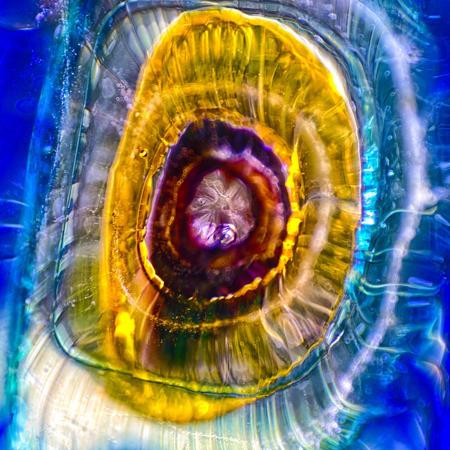

Golden Halo: Glowing Rings on Cobalt Blue
Abstract Glass Macro · square
A glowing golden ring sits inside a field of vivid cobalt blue. Inside it, nested ovals tighten toward a deep purple and maroon core, and at the very center is a small pale form that looks like crystal. White and teal streaks curve around the edges, with tiny bubbles caught in them. Fine lines radiate outward from the middle.
What holds me is how the rings pull your eye inward. It can read as an eye or a tunnel, lit from behind, with the brightest highlights along the yellow band. The ovals sit slightly off-axis, so the square never feels static.
Stay with it a while and the surface keeps giving: translucent layers, fine striations, bubbles you only notice on a second look. I leave what it is to you. Some people see an eye, some a sun, some a world under a lens. Your own response is the only test that counts.
The square, centered format makes it a single focal piece. The blue and gold carry a wall on their own, and against a quieter wall the saturated color is the first thing a guest sees.
Choose your size, paper, canvas, metal or frame. Printed, shipped and guaranteed by Fine Art America.
See it in a room
Artwork by Omaste Witkowski.
Start another art adventure · Ask the gallery what fits your wall